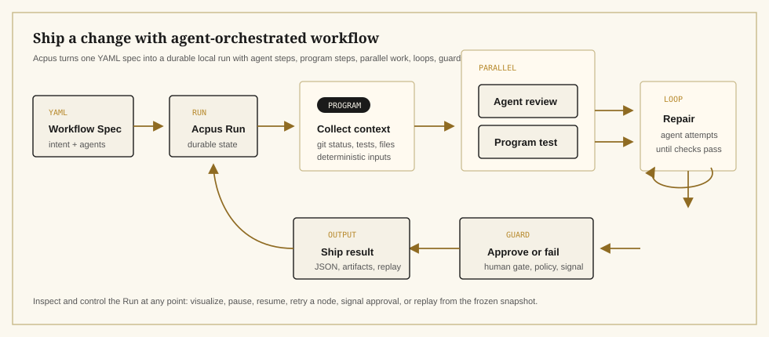

Quick StartInstall and run
Install the CLI, lint a Workflow Spec, submit a durable local Run, and open the terminal visualizer.
npm install -g acpus
acpus workflows lint review.workflow.yaml
acpus workflows run review.workflow.yaml --input '{"topic":"release readiness"}'
acpus runs visualizeView the Workflow Spec
version: 1
name: quick-review
input:
topic: string
agents:
reviewer:
use: codex
workflow:
steps:
- id: review
run: agent
use: reviewer
prompt: |
Review this topic and return concise JSON:
${{ input.topic }}
output:
risk_count: integer
ready: boolean
outputs:
risk_count: ${{ steps.review.output.risk_count }}
ready: ${{ steps.review.output.ready }}Run PatternA workflow run, by example
Acpus separates the YAML spec and durable Run from the workflow block. This example uses adversarial review to show programs, guards, parallel agents, synthesis, and output in one Run.

Use ItCore workflow loop
01
Define
Write YAML specs with structured inputs, ACP agents, local programs, and output schemas.
02
Conduct
Run specs by path or Catalog ref. The local supervisor persists node state, artifacts, and snapshots.
03
Control
Pause, resume, retry, approve, replay completed Runs, and inspect details in the visualizer.
AgentsUse it with your agent
Install the Acpus skill into the agent you already use. That agent can author Workflow Specs, run Acpus commands, and coordinate any worker agent supported by acpx through durable local Runs.
npx skills add kelvinschen/acpus --skill acpusCatalogAgent Workflow Playbooks
Playbooks are runnable starting points. Your agent can inspect them, adapt the pattern, and extend it into task-specific workflows.
Iteratively find deepening opportunities, apply behavior-preserving refactors in an isolated worktree, and verify each round until no worthwhile work remains.
Fan out independent research agents and synthesize a final report.
Run competing implementations in isolated worktrees and apply the winner.
Iterate agent repair attempts until verification passes, then apply the passing patch.
Featured playbooks shown here. Explore all workflow specs with interactive digraphs in the Workflow Visualizer.
VisualizerInteractive workflow diagrams
Every workflow spec rendered as an interactive digraph. Click nodes to inspect agents, programs, guards, loops, and fanout bodies. Expand composite nodes to see inner steps.